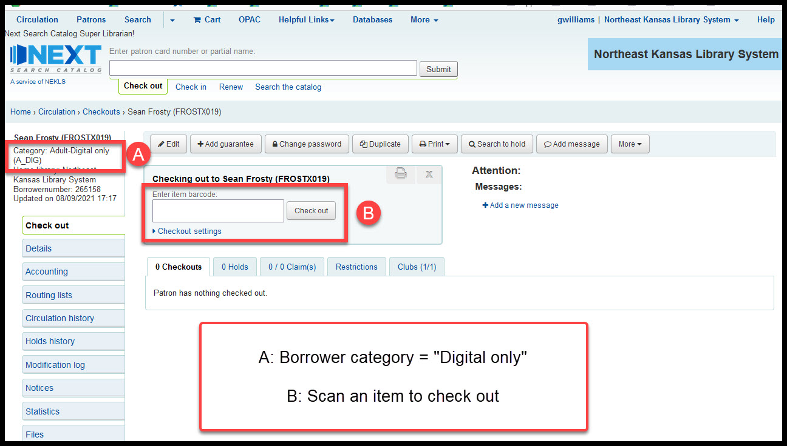
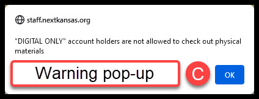
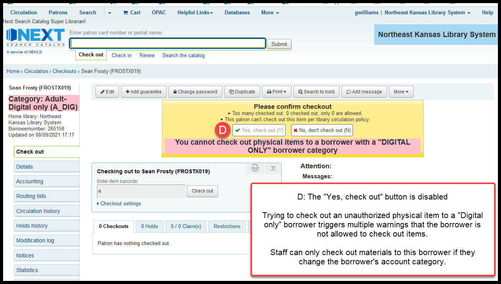

“Digital only” borrowers¶
There are 5 “Digital only” borrower categories.
These accounts categories were created for libraries that have policies that allow borrowers to access materials online such as Hoopla, Kanopy, Linkedin Learning, Overdrive, or other digital resources but don’t want the borrowers to be able to borrow physical materials from the library.
| Category name | Code | Type |
|---|---|---|
| Adult-Digital only | A_DIG | Adult |
| Minor-Digital only (age 00-11) | M_DIGJ | Child |
| Minor-Digital only (age 00-17) | M_DIG | Child |
| Minor-Digital only (age 12) | M_DIGT | Child |
| Minor-Digital only (ages 13-17) | M_DIGY | Child |
Currently A_DIG and M_DIG are in use at BONNERSPGS and LANSING.
Currently A_DIG, M_DIGJ, M_DIGT, and M_DIGY are in use at LEAVENWRTH.
Exceptions to “Digital only”¶
LEAVENWRTH has circulation rules that allow their “Digital only” borrowers to borrow items with the “PUBLIC USE COMPUTER” and “EQUIPMENT” item types when checking out materials at LEAVENWRTH.
Circulation Override Disabled¶
Circulation overrides for the 5 “Digital only” borrower categories are disabled as of August 2021.
What’s happened is that some parents have gone to the library and asked that their child’s accounts be set up as “Digital only” accounts. Then the children have gone to libraries that don’t offer “Digital only” accounts and, because the staff at these libraries are unfamiliar with these account types, staff at other libraries have overridden the checkout limits on these accounts against the wishes of the child’s parents. Then the child’s parent complain to staff at the child’s home library.
Because there are some exceptions to the “Digital only” rules at some of the libraries that offer these accounts, the code that disables checkout to these borrowers only works when staff try to override the limits on these accounts as shown below:
- If the borrower category says “Digital only”

- A warning will appear when you try to check out an unauthorized item

- The check-out box and the “Yes, check out” override button will be disabled
